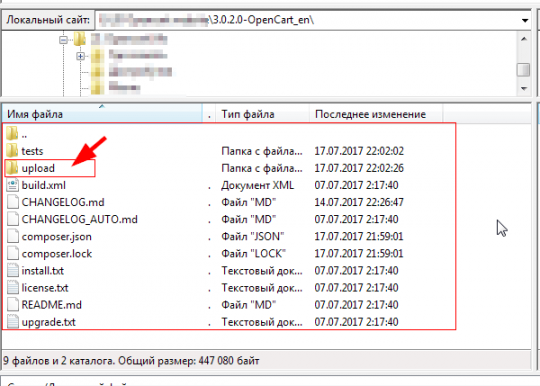
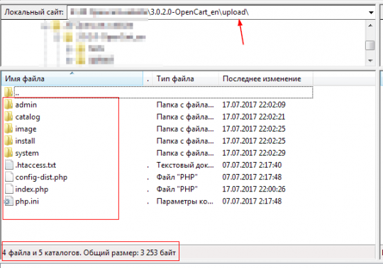
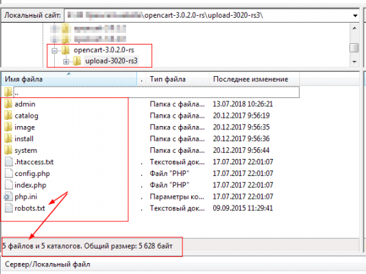
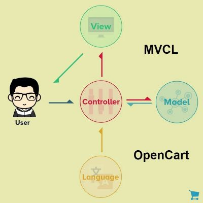
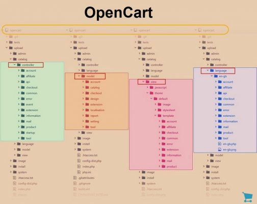

Дистрибутив OpenCart: как устроен, папки и файлы дистрибутива
При своём изучении CMS OpenCart я допустил принципиальную ошибку и начал изучение с установки и настройке системы. Впоследствии, это привело к сложностям тонких настроек магазина и потребовало вернуться к изучению самого дистрибутива OpenCart и принципов его работы.
Содержание дистрибутива – где что искать
Для разбора дистрибутива я буду использовать русскоязычную версию системы от автора: opencart-russia.ru.
Обратите внимание: Если вы берёте англоязычную версию дистрибутива на сайте тут или на GitHub автора тут, то загружать в корень своего сайта нужно только содержание каталога upload.

В состав дистрибутива (каталога upload) входят:
5 папок
Admin. Это административная часть магазина или его backend. По сути это сайт для администратора.
Catalog. Это витрина магазина доступная для посетителей. П сути это сайт для пользователей или frontend магазина.
Images. В этой папке все картинки магазина, включая каталог, картинки системы, а также картинки шаблонов. Кроме этого здесь есть папка cache для кеша сайта магазина.
System. Здесь системные файлы магазина, в том числе еще одна папка кеш: storage/cache.
 
5 файлов
htaccess.txt. Это классический файл для управления поведением веб-сервера apache на вашем хостинге. Используется для включения ЧПУ OpenCart и для указания основного каталога установки OpenCart.
Это может вас заинтересовать: OpenCart Cloud: интернет магазин OpenCart на облачном сервере
Файл config-dist.php. Основной файл системы с её параметрами. Для включения файла в работу его нужно переименовать в файл config.php. Аналогичное переименование нужно сделать для аналогичного файла в каталоге admin. По умолчанию этот файл пустой. После установки OpenCart в этом файле указаны данные базы данных и данные администратора.
Php.ini. Этот файл для задания параметров серверам php и mysql.
Файл robots.txt. Классический файл для управления работой поисковых систем. Авторы этой сборки составили неплохой файл robots.txt и менять его, на первых порах, нет смысла.
В английской версии дистрибутива файла robots.txt нет и его создавать и добавлять в корень сайта нужно самостоятельно.
Рекомендую на время оформления магазина, использовать файл robots.txt со следующим содержанием:
User-agent: *
Disallow: /
User-agent: Yandex
Disallow: /
Такой файл robots.txt полностью закроет содержание сайта магазина от поисковых ботов.
Файл index.php является запускающим и обязателен для любой сборки.
Каталоги дистрибутива
Работая с магазином OpenCart, не часто, но приходиться, обращаться к содержанию движка. Без опыта, разобраться, где что искать в каталогах движка не просто и требует пояснений.
Это может вас заинтересовать: Админ панель OpenCart – первое знакомство
Чтобы понять структуру OpenCart, нужно понимать, что построен движок по принципу MVC (ModelVewController).

Все компоненты конструкционного шаблона MVC работают во взаимодействии.
Теперь смотрим дистрибутив OpenCart. Он состоит из двух частей: фронтэнд для пользователей и бэкэнд для администратора. Вся административная часть лежит в каталоге admin. Часть для пользователя лежит в каталоге catalog. Обе части движка имеют одинаковую структуру и используют одну базу данных.
Открыв каталоги admin и catalog, вы увидите, что они состоят из каталогов со знакомыми названиями Model, Vew, Controller.

Кроме этих конструкционных каталогов присутствует каталог с файлами перевода language. Адреса каталогов перевода: /language, admin/language, catalog/language.
Кэш OpenCart 3, если он включен, собирается в каталогах image/cache и system/storage/cache.
Это может вас заинтересовать: Как создать категории Opencart магазина
Примечание: На OpenCart 3 очистку кэша НЕ нужно проводить вручную, авторы добавили кнопки очистки кеша темы и конструктора на панель администратора. Кеш легко очисть на вкладке Панель состояния>>> Настройки разработчика (значок шестерёнка справа вверху). Там же кэш можно отключить.
Тему (шаблон) сайта магазина вы найдете в каталоге catalog/view/theme. Тема по умолчанию называется default.
Заключение
В этой статье я показал, в общих чертах, как устроен дистрибутив OpenCart. Это информация позволит вам найти нужный файл системы в случае надобности.
©opencart.life
Еще статьи